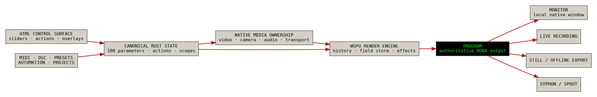
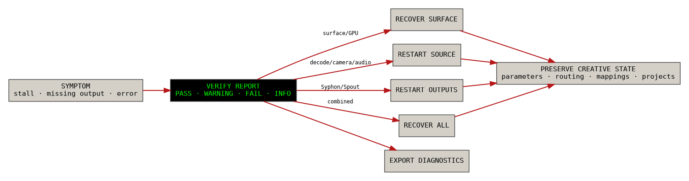
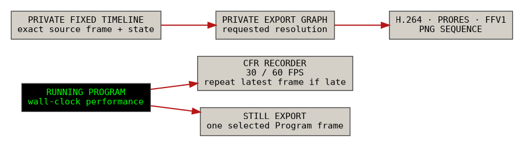

HUFF
This site preserves the complete design knowledge of the native HUFF application: what each feature does, how it fits into the instrument, which parts are core, which parts are provisional, and where new visuals or screenshots should be added. The public-facing site now focuses on the application itself rather than on milestone history.
Understand the Instrument
What HUFF is, how the native image pipeline works, and what Program means.
Native HUFF OverviewEffects & Compositing
Temporal Memory
Operate the Application
Use the interface, sources, routing, recording, export, and diagnostics.
Interface TourSources & Transport
Routing & Recipes
Verification & Recovery
Preserve Design Knowledge
Know where screenshots are needed, how features map together, and what can be pruned later.
Visual Guide & Image NeedsFeature Index
Caveats & Tradeoffs
Raw Retrospective

Updated native effect pipeline.
This is the current native rendering view. It explains the modern source → temporal memory → Program → outputs path and is the right diagram to use when introducing new readers to HUFF.
This is the current native rendering view. It explains the modern source → temporal memory → Program → outputs path and is the right diagram to use when introducing new readers to HUFF.

Native system overview.
Good for explaining that the WebView is only the control surface, while Rust and wgpu own the actual media and image state.
Good for explaining that the WebView is only the control surface, while Rust and wgpu own the actual media and image state.

Temporal resource model.
Use this when describing why HUFF is more than a simple filter chain. It shows history, feedback, and persistent image stores.
Use this when describing why HUFF is more than a simple filter chain. It shows history, feedback, and persistent image stores.

Output paths.
Explains how Program reaches the local monitor, live recording, deterministic export, and Syphon/Spout.
Explains how Program reaches the local monitor, live recording, deterministic export, and Syphon/Spout.

Verification and recovery.
One of the clearest native-only features. Helpful for communicating operational trust and troubleshooting strategy.
One of the clearest native-only features. Helpful for communicating operational trust and troubleshooting strategy.
1 / 5

Full Control WindowNeeded for Interface Tour. Highest priority real screenshot.
VERIFY OverlayNeeded for Verification & Recovery. Highest priority real screenshot.
Export / Output PanelsNeeded for Export, Syphon/Spout, and Interop pages.Important. The site now includes the conceptual diagrams, but it still benefits from a small set of true UI screenshots and several output examples. See Visual Guide & Image Needs for the full checklist.